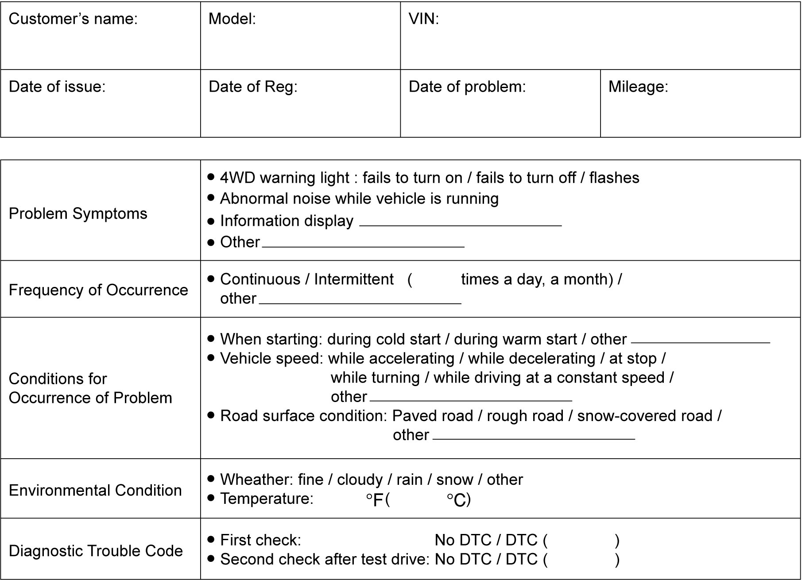

3B
| 4WD Control System Check |
Refer to the following items for the details of each step:
| Step | Action | Yes | No |
|---|---|---|---|
| 1 |
Customer complaint analysis
1)Perform customer complaint analysis.
Was customer complaint analysis performed?
|
Go to Step 2.
|
Perform customer complaint analysis.
|
| 2 |
DTC check, record and clearance
1)Check 4WD control module for DTC.
Is there any DTC(s)?
|
Print DTC or write it down and clear it referring to DTC Clearance. Go to Step 3.
|
Go to Step 4.
|
| 3 |
Visual inspection
1)Perform visual inspection.
Is there any faulty condition?
|
Repair or replace defective part, and then go to Step 11.
|
Go to Step 5.
|
| 4 |
Visual inspection
1)Perform visual inspection.
Is there any faulty condition?
|
Repair or replace defective part, and then go to Step 11.
|
Go to Step 8.
|
| 5 |
Trouble symptom confirmation
1)Check trouble symptom.
Is trouble symptom identified?
|
Go to Step 6.
|
Go to Step 7.
|
| 6 |
Rechecking and record of DTC
1)Recheck for DTC.
Is there any DTC(s)?
|
Go to Step 9.
|
Go to Step 8.
|
| 7 |
Rechecking and record of DTC
1)Recheck for DTC.
Is there any DTC(s)?
|
Go to Step 9.
|
Go to Step 10.
|
| 8 |
4WD control system symptom diagnosis
1)Perform 4WD control system symptom diagnosis.
Are check and repair complete?
|
Go to Step 10.
|
Check and repair defective part, and then go to Step 11.
|
| 9 |
Troubleshooting for DTC
1)Check and repair according to applicable DTC flow.
Are check and repair complete?
|
Go to Step 11.
|
Check and repair defective part, and then go to Step 11.
|
| 10 |
Intermittent problem check
1)Check for intermittent problems.
Is there any faulty condition?
|
Repair or replace defective part, and then go to Step 11.
|
Go to Step 11.
|
| 11 |
Final confirmation test
1)Perform final confirmation test.
Is there any problem symptom, DTC or abnormal condition?
|
Go to Step 6.
|
End.
|
Step 1. Customer Complaint Analysis
Record details of the problem (failure, complaint) and how it occurred as described by the customer.
For this purpose, such a questionnaire form shown below will facilitate collecting information for proper analysis and diagnosis.
NOTE:
The form is a standard sample. It should be modified according to characteristics of each market.
Customer questionnaire form (Example)

 "Expand image")
Step 2. DTC Check, Record and Clearance
Check DTC referring to DTC Check. If DTC is detected, print or write down DTC and then clear DTC(s) referring to DTC Clearance. DTC indicates malfunction in the system but it is not possible to know from it whether the malfunction is occurring now or it occurred in the past and normal condition has been restored. To know that, check symptom in question according to Step 5 and then recheck DTC according to Step 6.
Diagnosing trouble based on just the DTC in this step or failure to clear the DTC in this step may result in a misdiagnosis, trouble diagnosing of normal circuits or cause difficulty in troubleshooting which is otherwise necessary.
Step 3 and 4. Visual Inspection
As a preliminary step, perform a visual check of the items that support proper function of the 4WD control system referring to Visual Inspection.
Step 5. Trouble Symptom Confirmation
Check for trouble symptom based on information obtained in Step 1. Customer Complaint Analysis and Step 2. DTC Check, Record and Clearance.
Also, check for DTC according to “DTC Confirmation Procedure” described in each DTC flow.
Step 6 and 7. Rechecking and Record of DTC
Refer to DTC Check for checking procedure.
Step 8. 4WD Control System Symptom Diagnosis
Check the parts of the system suspected as a possible cause referring to 4WD Control System Symptom Diagnosis.
Step 9. Troubleshooting for DTC
Locate the cause of the trouble for namely the sensor, switch, wire harness, connector, rear drive coupling unit, 4WD control module as well as other parts based on the DTC indicated in Step 6 and 7 and referring to “applicable DTC flow”, and then repair or replace faulty parts.
Step 10. Intermittent Problem Check
Check parts that are prone to cause intermittent problem (e.g. wire harness, connector, etc.), referring to Intermittent Connection and Poor Contact Inspection and related circuit of DTC recorded in Step 2.
Step 11. Final Confirmation Test
Check that the problem symptom has gone and that the vehicle is free from any abnormal conditions. If what has been repaired is related to the DTC, clear the DTC once and check that no DTC is indicated.